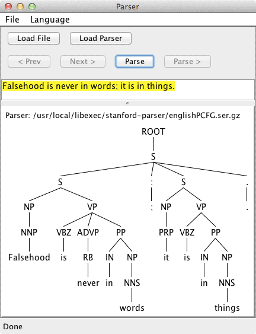

Stanford Parser
Setup
-
Install the parser
brew install stanford-parser
-
Take the parsers out of the Cellar
mkdir -p /usr/local/libexec ln -s /usr/local/Cellar/stanford-parser/1.6.2/libexec /usr/local/libexec/stanford-parser
-
Try it out in the GUI
lexparser-gui.csh

Hint: You can find the English parser here: /usr/local/libexec/stanford-parser/englishPCFG.ser.gz
Links
-
Building a Large Annotated Corpus of English: The Penn Treebank
Contains a table of the POS tag definitions.
Building a Large Annotated Corpus of English: The Penn Treebank
Contains a table of the POS tag definitions.